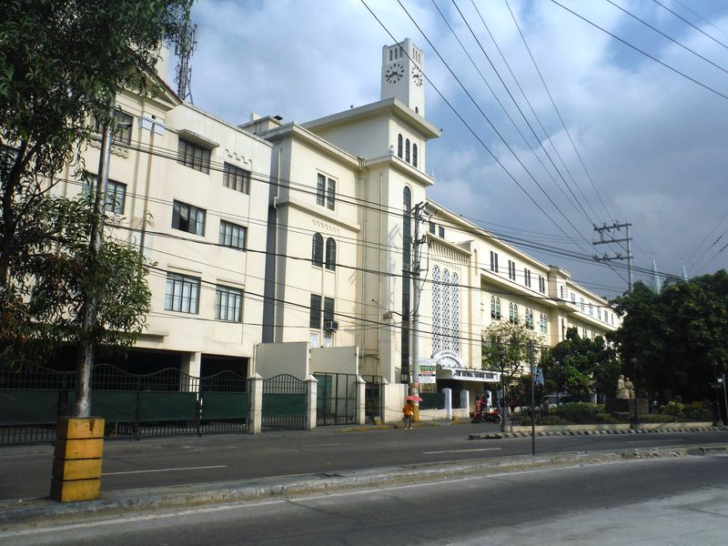
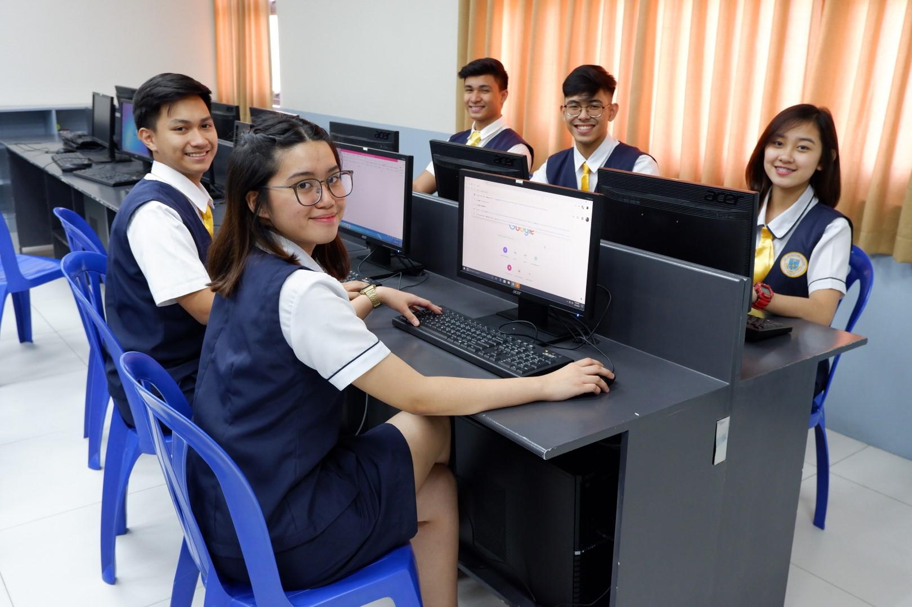
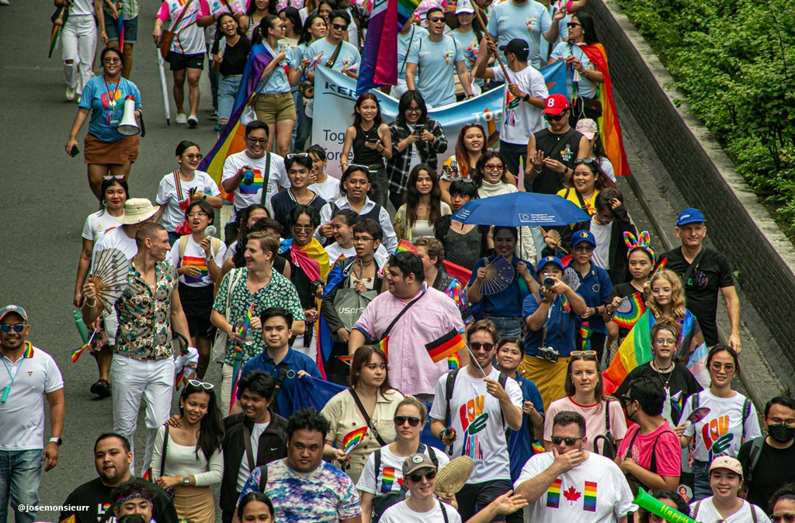

Pamantasan
Pamantasan:
Sa pamantasan, itinuturo hindi
lamang ang kaalaman, kundi ang
respeto at pagkilala sa pagkakaiba.
Ang pagkakaroon ng gender-
sensitive na wika sa silid-aralan ay
mahalaga tulad ng paggamit ng
inclusive terms, at pag-iwas sa
sexist language. Sa ganitong
paraan, pinapalaganap natin ang
pantay na karapatan sa pag-aaral at
pakikilahok.

Trabaho
Trabaho:
Sa trabaho, ang paggamit ng wika ay may impluwensya rin sa power dynamics.
Halimbawa, ang paraan ng pakikipag-usap sa mga kasamahan lalo na sa kababaihan at LGBTQIA+ ay dapat maging pantay at may respeto.
Ang sosyolinggwistika, o ang pag-aaral sa ugnayan ng wika at lipunan, ay tumutulong sa atin upang maintindihan kung paanong ang wika ay nakakaapekto sa opinyon, desisyon, at relasyon sa loob ng organisasyon.

Lipunan
Lipunan:
Sa lipunan, dito higit na makikita ang
koneksyon ng gender equality at
wika. Maraming mga gender
biases ang nakaugat sa ating mga
salita halimbawa, kapag ang mga lider
ay tinutukoy agad na "lalaki," o ang
paggamit ng mga salitang mapanira
sa mga taong hindi sumusunod sa
tradisyonal na gender norms.
Dito pumapasok ang papel ng
sosyolinggwistikana ipinapakita
nito kung paanong ang ating mga
salita ay makapangyarihan maaari
tayong magbuklod o maglayo,
magbukas ng isipan o magtakda ng
hangganan.
